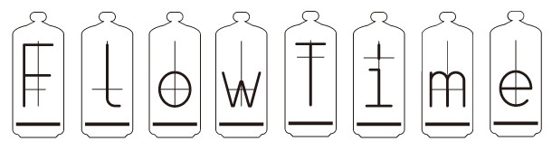

Ciência da Computação
O sistema Flow Time consiste na organização das descobertas científicas
relacionadas aos trabalhos publicados em diversas revistas científicas do mundo.
Os principais objetivos do sistema são:
- Armazenar a relação entre pesquisadores, trabalhos e descobertas;
- Oferecer uma organização com os avanços obtidos por pesquisadores no decorrer dos anos;
- Facilitar a busca por trabalhos científicos relacionados aos temas de pesquisa dos pesquisadores.
Trabalho Final da Disciplina: Desenvolvimento de Sistemas
Autor: Eduardo Cassiano da Silva
01/06/2018